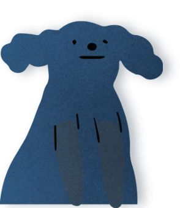

속성 중에 첫 글자만 넣어주세요!!
CSS 속성 검색하기
- align-content : 속성은 콘텐츠의 상하관계 정렬 상태를 정의합니다.
- align-items : 속성은 콘텐츠 내부의 정렬 상태를 정의합니다.
- align-self : 속성은 콘텐츠의 정렬 상태를 정의합니다.
- all : 속성은 요소의 속성을 초기화 또는 상속을 설정합니다.
- animation : 속성은 애니메이션을 정의합니다.
- animation-delay : 속성은 애니메이션 지연 시간을 설정합니다.
- animation-direction : 속성은 애니메이션 움직임 방향을 설정합니다.
- animation-duration : 속성은 애니메이션 움직임 시간을 설정합니다.
- animation-fill-mode : 속성은 애니메이션이 끝난 후의 상태를 설정합니다.
- animation-iteration-count : 속성은 애니메이션 반복 횟수 설정합니다.
- animation-name : 속성은 애니메이션 keyframe 이름을 설정합니다
- animation-play-state : 속성은 애니메이션 진행상태를 설정합니다.
- animation-timing-function : 속성은 애니메이션 움직임의 속도를 설정합니다.
- backface-visibility : 속성은 배경에 그래픽 효과를 설정합니다.
- backdrop-filter 속성은 배경에 그래픽 효과를 설정합니다.
- background 속성은 백그라운드 속성을 일괄적으로 설정합니다.
- background-attachment : 속성은 배경 이미지의 고정 여부를 설정합니다.
- background-blend-mode : 속성은 배경을 혼합했을 때의 상태를 설정합니다.
- background-clip : 속성은 백그라운드 이미지의 위치 기준점을 설정하기 위한 속성입니다.
- background-color : 속성은 백그라운드 색을 설정합니다.
- background-image : 속성은 백그라운드 이미지 및 배경 속성을 설정합니다.
- background-origin : 속성은 백그라운드 이미지의 위치 기준점을 설정하기 위한 속성입니다.
- background-position : 속성은 백그라운드 이미지의 위치 영역을 설정합니다.
- background-repeat : 속성은 백그라운드 이미지 반복 여부를 설정합니다.
- background-size : 속성은 백그라운드 이미지 사이즈를 설정합니다.
- border : 속성은 테두리 속성을 일괄적으로 설정합니다.
- border-bottom : 속성은 테두리 아래쪽 속성을 일괄적으로 설정합니다.
- border-bottom-color : 속성은 테두리 아래쪽 색 속성을 설정합니다.
- border-bottom-left-radius : 속성은 아래부분 왼쪽 모서리 굴곡을 설정합니다.
- border-bottom-right-radius : 속성은 아래부분 오른쪽 모서리 굴곡을 설정합니다.
- border-bottom-style : 속성은 테두리 아래쪽 스타일 속성을 설정합니다
- border-bottom-width : 속성은 테두리 아래쪽 두께 속성을 설정합니다
- border-collapse : 속성은 테이블의 테두리 분리 여부를 설정합니다.
- border-color : 속성은 테두리 색 속성을 설정합니다.
- border-image : 속성은 테두리 이미지 속성을 설정합니다.
- border-image-outset : 속성은 테두리 이미지 간격 속성을 설정합니다.
- border-image-repeat : 속성은 테두리 이미지 반복 속성을 설정합니다.
- border-image-slice : 속성은 테두리 이미지 크기 속성을 설정합니다.
- border-image-source : 속성은 테두리 이미지 경로 속성을 설정합니다.
- border-image-width : 속성은 테두리 이미지 두께 속성을 설정합니다.
- border-left : 속성은 테두리 왼쪽 속성을 일괄적으로 설정합니다.
- border-left-color : 속성은 테두리 왼쪽 색 속성을 설정합니다.
- border-left-style : 속성은 테두리 왼쪽 스타일 속성을 설정합니다.
- border-left-width : 속성은 테두리 왼쪽 두께 속성을 설정합니다.
- border-radius : 속성은 모서리 굴곡을 설정합니다.
- border-right : 속성은 테두리 오른쪽 속성을 일괄적으로 설정합니다.
- border-right-color : 성은 테두리 오른쪽 색 속성을 설정합니다.
- border-right-style : 속성은 테두리 오른쪽 스타일 속성을 설정합니다.
- border-right-width : 속성은 테두리 오른쪽 두께 속성을 설정합니다.
- border-spacing : 속성은 테이블의 테두리 간격을 설정합니다.
- border-style : 속성은 테두리 스타일 속성을 설정합니다.
- border-top : 속성은 테두리 위쪽 속성을 일괄적으로 설정합니다.
- border-top-color : 속성은 테두리 위쪽 색 속성을 설정합니다
- border-top-left-radius : 속성은 윗부분 왼쪽 모서리 굴곡을 설정합니다.
- border-top-right-radius : 속성은 윗부분 오른쪽 모서리 굴곡을 설정합니다.
- border-top-style : 속성은 테두리 위쪽 스타일 속성을 설정합니다.
- border-top-width : 속성은 테두리 위쪽 두께 속성을 설정합니다.
- border-width : 속성은 테두리 두께 속성을 설정합니다.
- bottom : 속성은 위치 요소의 아래쪽 속성을 설정합니다.
- box-decoration-break : 속성은 컬럼 및 줄바꿈시 테두리와 패딩의 방식을 설정합니다.
- box-shadow : 속성은 박스 요소의 그림자를 설정합니다.
- box-sizing : 속성은 요소 크기에 패딩 포함 여부를 설정합니다.
- caption-side : 속성은 caption의 위치를 설정합니다.
- caret-color : 속성은 input의 커서 색을 정의합니다.
- clear : 속성은 float 요소의 성질을 차단합니다.
- clip : 속성은 보이는 영역을 설정합니다.
- color : 속성은 글씨 색을 설정합니다
- column-count : 속성은 컬럼의 수를 정의합니다.
- column-fill : 속성은 열의 지정방법을 정의합니다.
- column-gap : 속성은 컬럼의 간격을 정의합니다.
- column-rule : 속성은 컬럼 라인의 가로값, 스타일, 컬러를 정의합니다.
- column-rule-color : 속성은 컬럼의 라인 색을 정의합니다.
- column-rule-style : 속성은 컬럼 라인의 스타일을 정의합니다.
- column-rule-width : 속성은 컬럼 라인의 가로값을 정의합니다.
- column-span : 속성은 열의 속성을 정의합니다.
- column-width : 속성은 컬럼의 가로 값을 정의합니다.
- columns : 속성은 열의 폭과 열의 수를 정의합니다.
- content : 속성은 콘텐츠 내용을 설정합니다.
- counter-increment : 속성은 콘텐츠의 순서 상태를 정의합니다.
- counter-reset : 속성은 콘텐츠의 숫자를 초기화합니다.
- cursor : 속성은 마우스 오버시 마우스 포인터를 정의합니다.
- direction : 속성은 문장의 방향을 설정합니다.
- display : 속성은 요소의 성질을 정의합니다.
- empty-cells : 속성은 테이블의 빈요소의 속성을 설정합니다.
- filter : 속성은 그래픽 효과를 설정합니다.
- flex : 속성은 콘텐츠의 성질을 flex로 정의합니다.
- flex-basis : 속성은 요소의 기본 단위를 정의합니다.
- flex-direction : 속성은 요소의 정렬 방향을 정의합니다.
- flex-flow : 속성은 요소의 정렬 방향과 줄 속성을 설정합니다.
- flex-grow : 속성은 요소의 크기를 숫자를 통해 정의합니다.
- flex-shrink : 속성은 요소의 크기를 숫자를 통해 줄여줍니다.
- flex-wrap : 속성은 요소의 줄 속성을 설정합니다.
- float : 속성은 블록요소의 정렬 상태를 설정합니다.
- font : 속성은 폰트에 관 속성은 한 설정을 정의합니다.
- font-family : 속성은 폰트 종류를 설정합니다.
- font-siz : 성은 폰트 사이즈 속성을 설정합니다.
- font-size-adjust : 속성은 소문자를 기준으로 폰트 크기를 설정합니다.
- font-stretch : 속성은 폰트의 굵기를 정의합니다.
- font-style : 속성은 폰트의 스타일을 정의합니다.
- font-variant : 속성은 글꼴의 변형을 정의합니다.
- font-weight : 속성은 폰트의 두께를 정의합니다.
- grid : 속성은 세로 열과 가로 행을 기준으로 요소를 정렬할 수 있습니다.
- grid-area : 속성은 특정 item을 2열 1에서 시작하여 2행 3열에 걸쳐 배치합니다.
- grid-auto-columns : 속성은 암시적인 열(Track)의 크기를 정의합니다.
- grid-auto-flow : 속성은 자동 배치 알고리즘 방식을 정의합니다.
- grid-auto-rows : 속성은 암시적인 행(Track)의 크기를 정의합니다.
- grid-column : 속성은 grid-column-start와 grid-column-end 속성을 같이 사용합니다.
- grid-column-end : 속성은 특정 item을 표시하기 끝마칠 열을 지정합니다.
- grid-column-gap : 속성은 그리드 열사이의 간격 설정합니다.
- grid-column-start : 속성은 특정 item을 표시하기 시작할 열을 지정합니다.
- grid-gap : grid-row-gap와 grid-column-gap 속성을 같이 사용합니다.
- grid-row : grid-row-start와 grid-row-end 속성을 같이 사용합니다.
- grid-row-end : 속성은 특정 item을 표시하기 끝마칠 행을 지정합니다.
- grid-row-gap : 속성은 행과 행 사이의 간격(Line)을 정의합니다.
- grid-row-start : 속성은 특정 item을 표시하기 시작할 행을 지정합니다.
- grid-template : 속성은 grid-template-xxx의 단축 속성입니다.
- grid-template-areas : 속성은 아이템의 위치를 설정합니다.
- grid-template-columns : 속성은 가로 컬럼의 크기와 위치를 설정합니다.
- grid-template-rows : 속성은 그리드 행의 크기 조정 기능을 설정합니다.
- hanging-punctuation : 속성은 글씨의 시작 및 끝의 위치 정의합니다.
- height : 속성은 콘텐츠 요소의 세로값을 설정합니다.
- hyphens : 속성은 텍스트의 하이픈 영역을 설정합니다.
- isolation : 속성은 stacking context을 설정합니다.
- justify-content : 속성은 콘텐츠의 좌우 관계 정렬 상태를 정의합니다.
- left : 속성은 위치 요소의 왼쪽 속성을 설정합니다.
- letter-spacing : 속성은 글자 사이의 간격을 설정합니다.
- line-height : 속성은 줄 간격을 설정합니다.
- list-style : 속성은 목록 스타일 속성을 설정합니다.
- list-style-image : 속성은 목록 마커의 이미지를 설정합니다.
- list-style-position : 속성은 목록 마커의 위치 속성을 설정합니다.
- list-style-type : 속성은 목록 마커의 유형을 설정합니다.
- margin : 속성은 요소의 바같쪽 여백을 설정합니다.
- margin-bottom : 속성은 요소의 아래 바같쪽 여백을 설정합니다.
- margin-left : 속성은 요소의 왼쪽 바같 여백을 설정합니다.
- margin-right : 속성은 요소의 오른쪽 바같 여백을 설정합니다.
- margin-top : 속성은 요소의 위부분 바같 여백을 설정합니다.
- max-height : 속성은 요소의 최대 세로값을 설정합니다.
- max-width : 속성은 요소의 최대 가로 값을 설정합니다
- min-height : 속성은 요소의 최소 세로 값을 설정합니다.
- min-width : 속성은 요소의 최소 가로 값을 설정합니다.
- mix-blend-mode : 속성은 배경의 혼합 상태를 정의합니다.
- object-fit : 속성은 img, video 태그의 크기를 정의합니다
- object-position : 속성은 img, video 태그의 위치를 정의합니다.
- opacity : 속성은 요소의 투명도를 설정합니다.
- order : 속성은 flex 콘텐츠의 순서를 정의합니다.
- outline : 속성은 아웃라인 속성을 일괄적으로 설정합니다.
- outline-color : 속성은 아웃라인의 색을 정의합니다.
- outline-offset : 속성은 아웃라인의 간격을 정의합니다.
- outline-style : 속성은 아웃라인 스타일을 정의합니다.
- outline-width : 속성은 아웃라인의 두께를 정의합니다.
- overflow : 속성은 내가 지정한 영역에 요소들이 벗어났을때 속성을 설정합니다.
- overflow-x : 속성은 X축을 기준으로 지정한 영역에 요소들이 벗어났을 때 속성을 설정합니다.
- overflow-y : 속성은 Y축을 기준으로 지정한 영역에 요소들이 벗어났을 때 속성을 설정합니다.
- padding : 속성은 박스 요소 안쪽 여백을 일괄적으로 설정합니다.
- padding-bottom : 속성은 박스 요소 안쪽 여백을 설정합니다.
- padding-left : 속성은 박스 요소 왼쪽에 안쪽 여백을 설정합니다.
- padding-right : 속성은 박스 요소 오른쪽에 안쪽 여백을 설정합니다.
- padding-top : 속성은 박스 요소 위쪽에 안쪽 여백을 설정합니다.
- page-break-after : 속성은 페이지 인쇄시 분리에 관한 설정을 정의합니다.
- page-break-before : 속성은 인쇄시 페이지 분리에 관한 설정을 정의합니다.
- page-break-inside : 속성은 인쇄시 페이지 분리에 관한 설정을 정의합니다.
- perspective : 속성은 3D를 표현할 때 원근점을 정의합니다.
- perspective-origin :
- pointer-events : 속성은 3D를 표현할 때 원근점의 방향을 정의합니다.
- position : 속성은 요소의 위치를 설정합니다.
- quotes :
- resize :
- right :
- tab-size :
- table-layout :
- text-align : 속성은 텍스트 정렬 방식을 설정합니다.
- text-align-last :
- text-decoration :
- text-decoration-color :
- text-decoration-line :
- text-decoration-style :
- text-indent :
- text-justify :
- text-overflow :
- text-shadow :
- text-transform :
- top : 속성은 위치 요소의 위쪽 속성을 설정합니다.
- transform :
- transform-origin :
- transform-style :
- transition : 속성은 요소의 움직임 시간을 일괄적으로 설정합니다.
- transition-delay :
- transition-duration :
- transition-property :
- transition-timing-function :
- unicode-bidi :
- user-select :
- vertical-align : 속성은 텍스트의 상하 정렬 방식을 설정합니다.
- visibility :
- white-space :
- width : 속성은 요소의 가로 값을 설정합니다.
- word-break :
- word-spacing :
- word-wrap :
- z-index :

